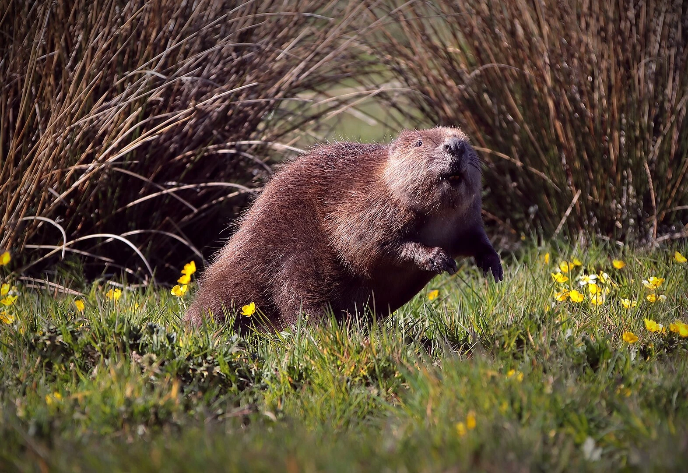
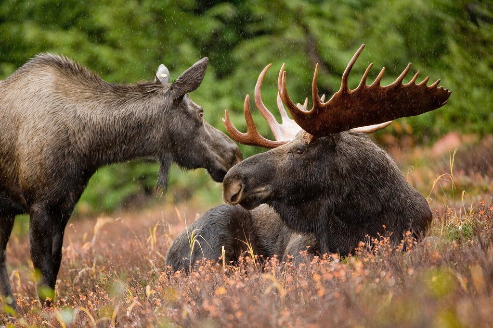
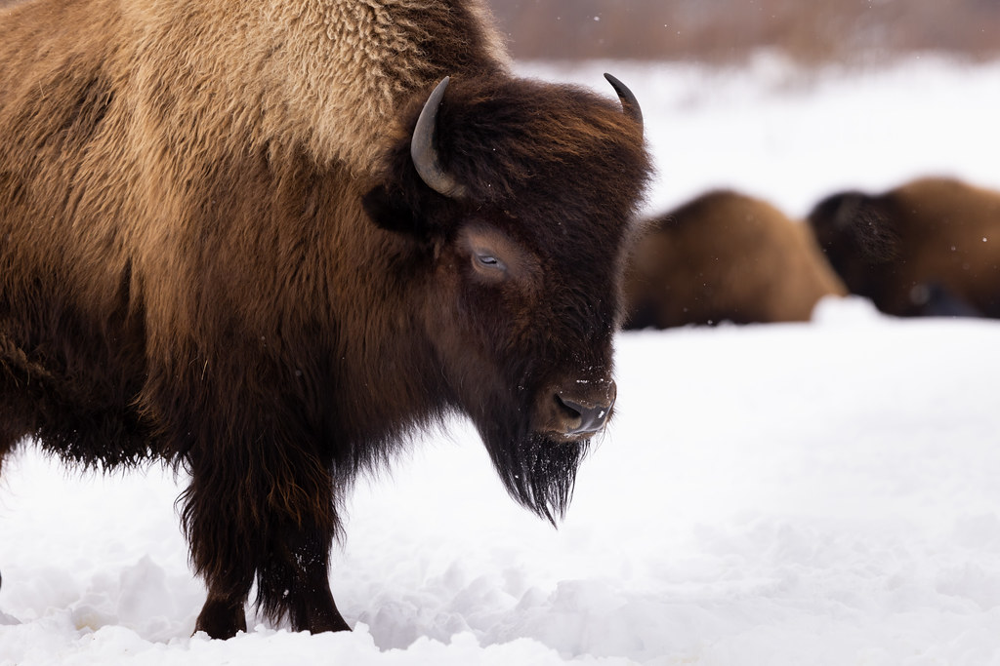
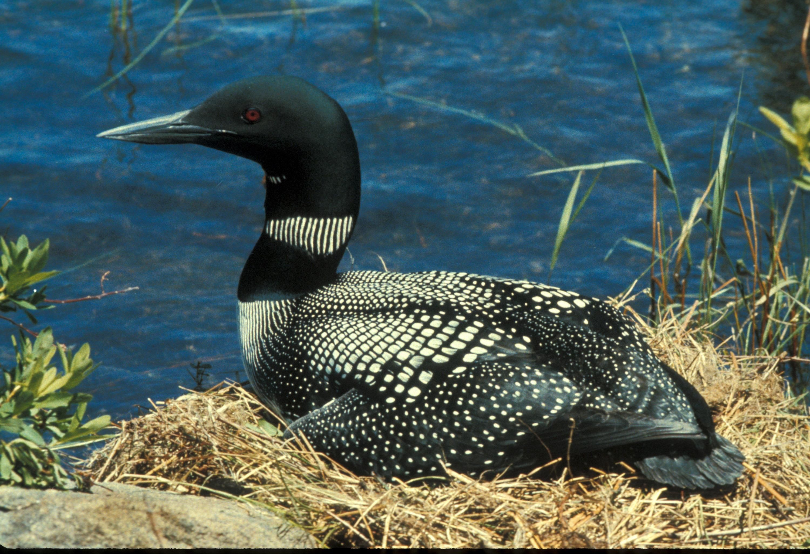

Beaver
The Beaver's symbolic meaning dates back around the year 1600s to 1800s, where beaver fur were highly valued by the Europeans, thus leading to the fur trade, one of Canada's main industries.

The Beaver's symbolic meaning dates back around the year 1600s to 1800s, where beaver fur were highly valued by the Europeans, thus leading to the fur trade, one of Canada's main industries.

The Moose is a symbol of Canada because from the outside looking in, it is one of the country's most recognizable and iconic animal. The Moose are not only native animals of Canada, but they are also a strong animal in their own right.

The symbolic value of the Bison stems from the Indigenous culture. Countless herds of Bison shaped the prairie and was key for the Indigenous people's every day life.

The Common Loon's Canadian symbol stems from its paramount presence in regard to the Canadian wilderness and lakes. The Loonie that Canadians are quite fond of is also named after the Common Loon.